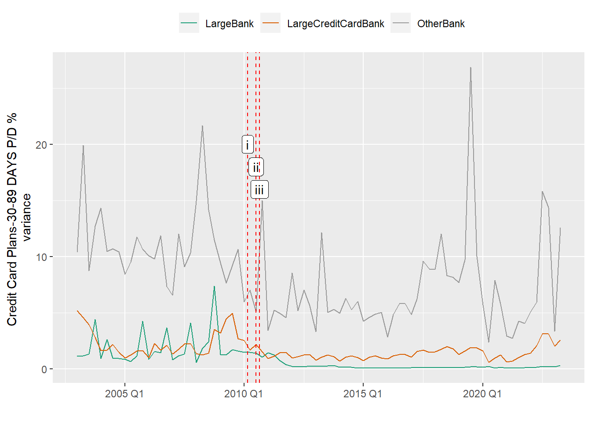
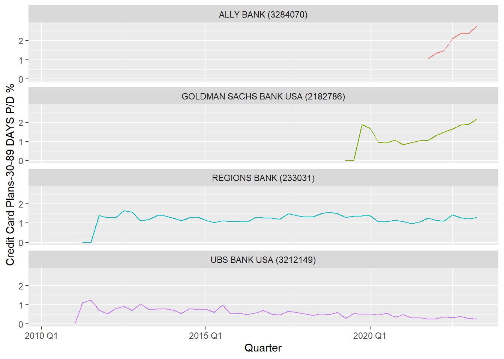
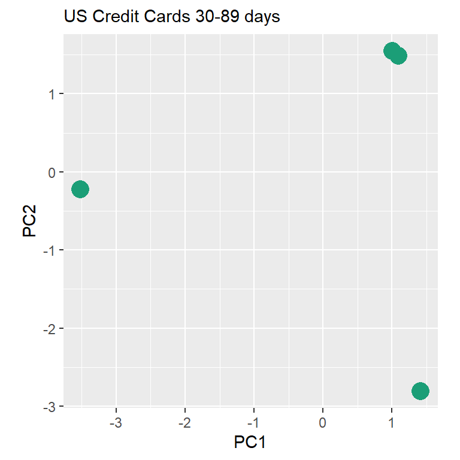
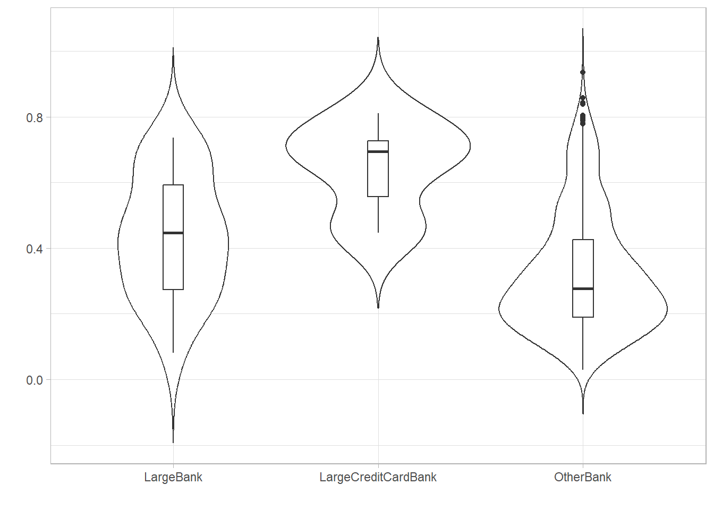
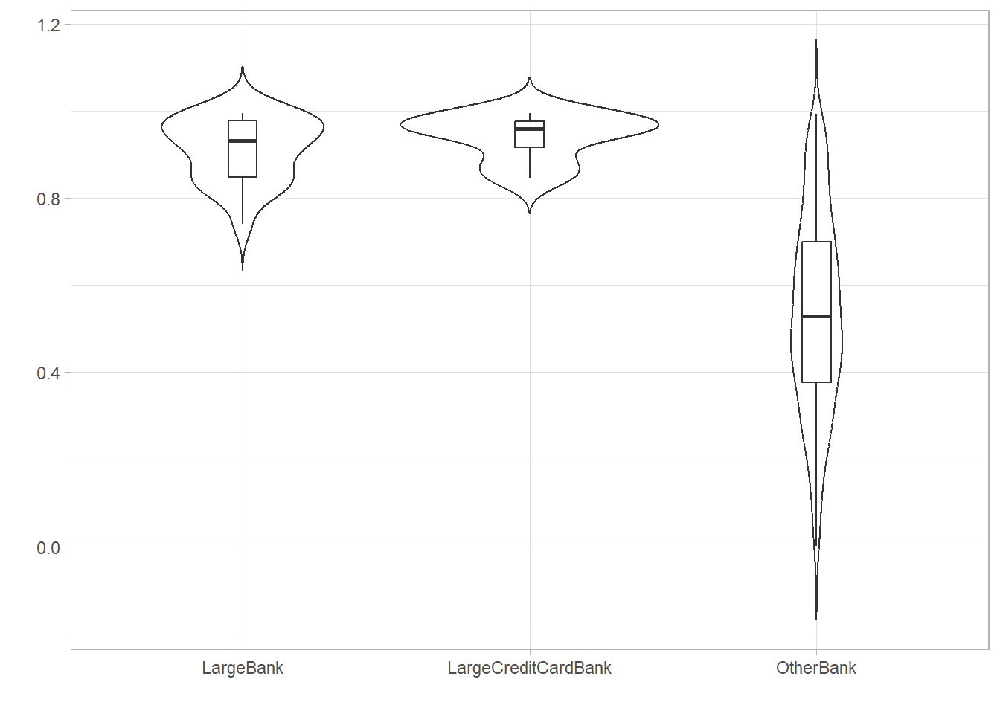
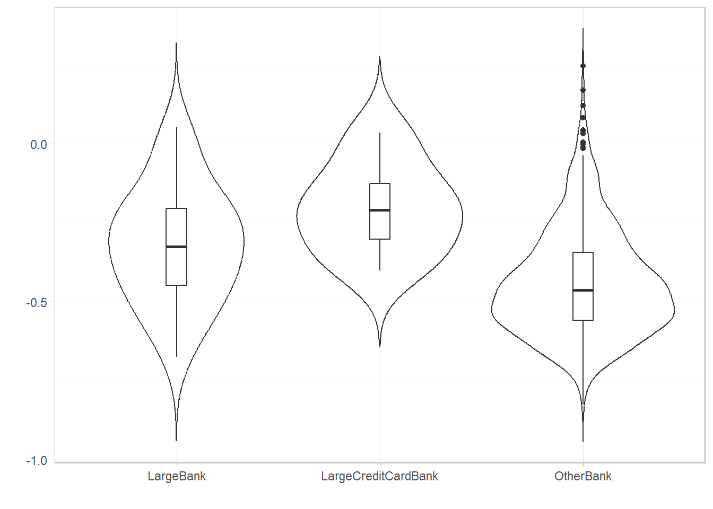
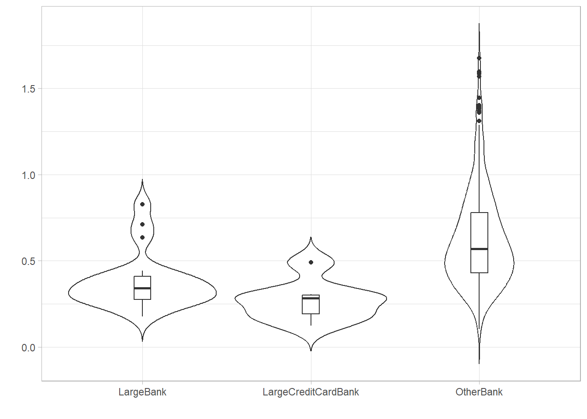

US banks are required to report quarterly financial data e.g., Balance Sheet and Income Statements, to the US Federal Financial Institutions Examination Council (FFIEC) who make this data publicly available in a consolidated format as a part of their Uniform Bank Performance Reporting (UBPR) regime. Data is available from 2002 Q4 FFIEC (2023).
We are interested in measures that will provide insights to Bank’s credit card businesses as shown in Table 2.1.
Loans to Individuals for Household, Family, and Other Personal Expenditures (I.E., Consumer Loans)(Includes Purchased Paper):Credit Cards
UBPRE263
Unused Commitments on Credit Cards as a percent of Total Assets
UBPRE425
Credit Card Loans, % Gross LN&LS
UBPRE889
Credit Card Loans, % Tier 1 Capital plus Allowance
UBPRE521
Credit Card Plans-90+ Days P/D %
UBPRE522
Credit Card Plans-Nonaccrual %
UBPRE523
90 days+ Nonaccrual (UBPRE521+UBPRE522)
UBPRE524
Credit Card Plans-30-89 DAYS P/D %
UBPRE411
Credit Card Plans Net Losses (%)
2.1 Measure of portfolio quality
To measure quality we can use the proportion of credit cards that are delinquent in the portfolio. This is the sum of UBPRE523 and UBPRE524; accounts that are accruing payments but are overdue by 30 day+ or are in non-accrual status i.e. non-performing loans.
However, given we are interested in the impact of a partnership, using measure Credit Card Plans-30-89 DAYS P/D % (UBPRE524) is ideal as it gives us the earliest indicator of delinquency.
2.2 Bank Peer Groups
The scope of Banks included in our analysis is not limited to the banks involved in credit card partnerships. We can use data from FFIEC to add information about their peers i.e. other banks that are similar.
Table 2.2 details 3 peer groups. National (US-wide) Credit card partnerships occur between banks in the Large Bank and Large Credit Card Bank groups. These peer groups are defined by FFIEC (see Section 3.1 for full list of Banks in each peer group) (FFIEC 2023).
A Large Bank like CITIBANK will have a multiple businesses: household mortgages and credit cards; market trading; investment banking and more. In contrast, large credit card banks like BARCLAYS US specialise in credit cards only. Consequently, we expect to see the peer groups react differently to external factors, or exhibit different internal dynamics and risk profiles.
Insured commercial banks having assets greater than $100 billion
CITIBANK, JPMORGAN CHASE BANK, MORGAN STANLEY
22
LargeCreditCardBank
201
Large Credit Card Banks: Credit card specialty banks having assets greater than $ 3 billion
BARCLAYS BANK, SYNCHRONY BANK, DISCOVER BANK
7
OtherBank
Other - all other Banks that have reported UBPRE524
1257
Note
Why are there thousands of Banks? The US Banking system grew out of 19th-century regulations that restricted where banks could operate. This resulted in a very localised Banking market. Today big banks such as JPMorgan Chase, Bank of America, Citigroup and Wells Fargo, dominate the industry but there are still about 4,100 US Banks compared with 353 in Britain and 261 in Germany (Economist 2023).
2.3 Data Period
Regulation implemented in 2010 had a material impact on the credit card market (CFPB 2013; also Jambulapati and Stavins 2013). As highlighted by Jambulapati and Stavins (2013), regulation coincided with the 2008 financial crisis and recession, making it difficult to fully assert causation (2013).
The regulations introduced were:
Credit Card Accountability Responsibility and Disclosure (CARD) Act of 2009 which had a staggered implementation in February and August 2010. This Act requires Banks to assess whether a potential borrower has the means to repay. Additionally, high-risk borrowers like those under 21, have additional restrictions. This has led to stricter lending criteria e.g., income and credit history checks (CFPB 2013).
Regulation Z, or the Truth in Lending Act (TILA), focuses on ensuring transparency and fairness in lending practices. Banks have to provide full disclosure of the terms and conditions of a loan agreement (CFPBb 2023).
We can see the impact in Figure 2.1 which plots a linear trend for Credit Card Plans-30-89 DAYS P/D % for each peer group. Based on Figure 2.1 (c) there was increasing delinquency for Large Banks and Large Credit Card Banks before regulation, but post regulation the trend has reversed and is now trending down.
For our analysis we will focus on credit card partnerships post regulation as this is more relevant for commenting on future partnership deals.
(a) Bank Type have different intercepts and data patterns

(b) Variance pre and post Regulation (i) - CARD Act part 1 (ii) - Regulation Z and (iii) Card Act part 2 The variance for Large Banks and Large Credit Card Banks have reduced post regulatory changes.
(c) Linear trend pre and post Regulation.
Figure 2.1: Impact of Regulation
2.4 Bank Outliers
As we are dealing with time series data, we need to identify banks where their individual series characteristics are markedly different from those of its peers.
Figure 2.2 takes the approach from Hyndman and Athanasopoulos (2021) who use Principal Components Analysis (PCA) on a set of calculated statistical features such as intermittency, lumpiness, stability and Seasonal-Trend decomposition using LOESS (STL) (2021).
(a) PCA for Large and Large Credit Card Banks using features: lumpiness, stability and seasonal. PC1 represents the most variation in the data and PC2 represents the second most variation in the data.

(b) Data series for Banks with PC1 > 4 and PC2 > 2.5
Figure 2.2: Outlier Detection using PCA
Interestingly, all the banks in Figure 2.2 (b) started or re-started (as was the case for Regions Bank) their credit card businesses after 2010 Q2 (regulatory period cut-off). With the exception of Ally Bank all series begin at 0 and sharply increase after the first or second quarter. This pattern is expected as it takes 30+ days for credit cards to become delinquent.
If we drop the first 2 non-zero quarters and re-run the PCA (see Figure 2.3) the banks are no longer outliers - indicating that it was that sharp increase that was unusual.
Code
outlier_df <-overdue30to89_lbanks |>filter(IDRSSD %in% outliers$IDRSSD, Value !=0) |> tsibble::group_by_key() |>slice(3:n())all_f_outliers <- outlier_df |>features(Value, feature_set(tags = selected_feats))all_f_outliers |>mutate_if(is.numeric, replace_na, -1) |>#where we could not calc a feature valueselect(-c(IDRSSD,BankName, Measure, Label, Description, BankType)) |>prcomp(scale =TRUE) |> broom::augment(all_f_outliers) |>pcs.plot()

Figure 2.3: PCA of outliers after their first 2 non-zero quarters are dropped
Figure 2.4 plots the distribution of Credit Card Plans-30-89 DAYS P/D %. We can see that there are two peaks for Large Credit Card Banks. There are 7 banks in the this peer group which may be too small to capture the true distribution effectively. However, it may also indicate that there are sub-groups within this peer group. For instance, the first peak could represent banks that have lower risk profiles, while the second represents banks that have a higher risk profiles.
JPMORGAN CHASE BANK, NATIONAL ASSOCIATION (852218)
0.47
0.7500
0.880
1.000
2.53
CAPITAL ONE, NATIONAL ASSOCIATION (112837)
1.16
1.5900
1.825
2.040
2.62
SANTANDER BANK, NATIONAL ASSOCIATION (722777)
0.71
0.9825
1.380
1.480
2.67
WELLS FARGO BANK, NATIONAL ASSOCIATION (451965)
0.69
1.1000
1.230
1.320
2.75
ALLY BANK (3284070)
1.47
2.1000
2.380
2.380
2.79
CITIBANK, N.A. (476810)
0.67
1.0800
1.180
1.400
3.19
BMO HARRIS BANK NATIONAL ASSOCIATION (75633)
0.73
1.1900
1.300
1.530
5.06
Figure 2.5 shows the features from Section 2.4 that we can use to further explore the characteristics of each peer group (the calculations are documented in the tsfeatures R package by Hyndman and Yang (2023)).
The Other Banks peer group has been added for interest.
(a) Lumpiness - variance of the variances based on tiled yearly(non-overlapping) windows
(b) Stability - the variance of the means based on tiled yearly(non-overlapping) windows

(c) STL decomposition Seasonal Strength - 0 is week (non-seasonal), 1 is strong

(d) STL decomposition Trend Strength - 0 is week (no trend), 1 is strong
(e) Linearity - values around 0 indicate the series is linear

(f) Autocorrelation - first autocorrelation coefficient

(g) Autocorrelation - 10th autocorrelation coefficient. In a completely random series (white noise), we would expect autocorrelation coefficients near zero for all lags
(h) Minimum number of differences necessary to obtain a stationary time series
Figure 2.5: Exploring Statistical Features (Post Regulatory environment)
Figure 2.5 (a): Other Banks are lumpy. Also we can see from Figure 2.1 (b) that lumpiness continued post regulatory changes even though Other Banks are subject to the same regulation.
Figure 2.5 (b): For Large Banks and Large Credit Card Banks the stability is ~0.8 indicating a degree of fluctuation in the data from one year to the next.
Figure 2.5 (c)Large Credit Card Banks are seasonal. This can also be seen in the undulating shape in ACF plot (see Figure 2.7 (a)).
Figure 2.6 shows both Large Banks and Large Credit Card Banks peak in Q3. Given events like Black Friday, Thanksgiving and Christmas occur in Q4, we may have expected peak delinquency in Q4 or Q1.
Figure 2.5 (f) the first autocorrelation coefficient is close to 0 which indicates a weak linear relationship between lagged values. Of note the coefficients are negative indicating a tendency for a short-term reversal. This can be seen in Figure 2.1 (a) where the values oscillate.
Figure 2.5 (g) the 10th autocorrelation coefficient. Checking overall autocorrelation using the Ljung-Box test proves autocorrelation i.e. data pattern is not due to chance.
Ljung-Box test
Code
final_df |>na.omit() |>pull(value_diff) |>Box.test(lag =10, type ="Ljung")
Figure 2.5 (h)Large Credit Card Banks is not stationary. Performing a difference i.e. to get the quarterly change in UBPRE524, makes the series stationary as shown in Figure 2.7. This can be confirmed by performing an augmented Dickey–Fuller (ADF) test on the differenced value. We also see that, post differencing, the autocorrelation coefficient at lag 2 is above the significance threshold. This is likely due to seasonality as there are larger coefficients at regular intervals - lags 2, 6, 10, and 14. The decreasing magnitude of these coefficients tell us the earlier lags have a stronger influence than values further in the past.
Augmented Dickey-Fuller Test
data: pull(na.omit(final_df), value_diff)
Dickey-Fuller = -14.145, Lag order = 11, p-value = 0.01
alternative hypothesis: stationary
2.6 Summary
In summary, based on exploration of the data we will prepare the data for modelling by:
Selecting:
Target measure: Credit Card Plans-30-89 DAYS P/D % (UBPRE524).
Banks: Large Banks and Large Credit Card Banks.
Date Period: from 2010 Q2.
Removing:
Outlier data points: first 2 quarters from banks in Figure 2.2 (b).
Transforming:
target measure to make it stationary by taking the first difference.
---title: "Bank Data"format: html---US banks are required to report quarterly financial data e.g., Balance Sheet and Income Statements, to the US Federal Financial Institutions Examination Council (FFIEC) who make this data publicly available in a consolidated format as a part of their Uniform Bank Performance Reporting (UBPR) regime. Data is available from 2002 Q4 @ffiec.We are interested in measures that will provide insights to Bank's credit card businesses as shown in @tbl-ccmeasures. ```{r}#| tbl-cap: "UBPR Credit Card Measures"#| label: tbl-ccmeasures#| warning: falsesource('functions.R')credit_card() |>distinct(Measure, Description) |>filter(str_detect(Description, "Credit|90 days")) |> knitr::kable(format ="html")```## Measure of portfolio qualityTo measure quality we can use the proportion of credit cards that are delinquent in the portfolio. This is the sum of UBPRE523 and UBPRE524; accounts that are accruing payments but are overdue by 30 day+ or are in non-accrual status i.e. non-performing loans. However, given we are interested in the impact of a partnership, using measure **Credit Card Plans-30-89 DAYS P/D %** (UBPRE524) is ideal as it gives us the earliest indicator of delinquency.## Bank Peer GroupsThe scope of Banks included in our analysis is not limited to the banks involved in credit card partnerships. We can use data from FFIEC to add information about their peers i.e. other banks that are similar. @tbl-peergrpcnt details 3 peer groups. National (US-wide) Credit card partnerships occur between banks in the **Large Bank** and **Large Credit Card Bank** groups. These peer groups are defined by FFIEC (see @sec-peers for full list of Banks in each peer group) [@ffiec].A Large Bank like CITIBANK will have a multiple businesses: household mortgages and credit cards; market trading; investment banking and more. In contrast, large credit card banks like BARCLAYS US specialise in credit cards only. Consequently, we expect to see the peer groups react differently to external factors, or exhibit different internal dynamics and risk profiles. ```{r}#| tbl-cap: "Number of Banks in each peer group"#| label: tbl-peergrpcnt#| warning: falseoverdue30to89 <-credit_card.overdue_3089()target_label <-credit_card.target_label()bank_scope <- overdue30to89 |>as_tibble() |>group_by(BankName,BankType) |>summarise(total_bal =sum(abs(Value),na.rm=T)) |>filter(!(is.na(total_bal)|total_bal==0))bank_n <- bank_scope |>group_by(BankType) |>summarise(Number =n())bank_n |>right_join(bank_type.desc()) |>relocate(Number, .after =last_col()) |> knitr::kable(format ="html") ```::: {.callout-note}Why are there thousands of Banks? The US Banking system grew out of 19th-century regulations that restricted where banks could operate. This resulted in a very localised Banking market. Today big banks such as JPMorgan Chase, Bank of America, Citigroup and Wells Fargo, dominate the industry but there are still about 4,100 US Banks compared with 353 in Britain and 261 in Germany [@economist2023]. :::## Data PeriodRegulation implemented in 2010 had a material impact on the credit card market [@cfpb2013; also @boston2014]. As highlighted by @boston2014, regulation coincided with the 2008 financial crisis and recession, making it difficult to fully assert causation [-@boston2014].The regulations introduced were:1. Credit Card Accountability Responsibility and Disclosure (CARD) Act of 2009 which had a staggered implementation in February and August 2010. This Act requires Banks to assess whether a potential borrower has the means to repay. Additionally, high-risk borrowers like those under 21, have additional restrictions. This has led to stricter lending criteria e.g., income and credit history checks [@cfpb2013]. 2. Regulation Z, or the Truth in Lending Act (TILA), focuses on ensuring transparency and fairness in lending practices. Banks have to provide full disclosure of the terms and conditions of a loan agreement [@cfpb2010z].We can see the impact in @fig-regulation which plots a linear trend for *`r target_label`* for each peer group. Based on @fig-regulation-3 there was increasing delinquency for Large Banks and Large Credit Card Banks before regulation, but post regulation the trend has reversed and is now trending down.For our analysis we will focus on credit card partnerships post regulation as this is more relevant for commenting on future partnership deals. ```{r}#| warning: false#| label: fig-regulation#| fig-cap: "Impact of Regulation"#| fig-subcap: #| - "Bank Type have different intercepts and data patterns"#| - "Variance pre and post Regulation <br>(i) - CARD Act part 1 (ii) - Regulation Z and (iii) Card Act part 2 <br>The variance for Large Banks and Large Credit Card Banks have reduced post regulatory changes."#| - "Linear trend pre and post Regulation."#| layout-ncol: 1reg_date_z <-as.Date("2010-07-01")reg_date_c1 <-as.Date("2010-02-22")reg_date_c2 <-as.Date("2010-08-22")overdue30to89 |>filter(value_diff <=23) |>group_by(BankType) |>summarise(val_mean =mean(Value, na.rm=T)) |>autoplot(val_mean, aes(colour=BankType)) +geom_smooth(method ="lm", se =FALSE, show.legend = F, linewidth=.5) +scale_color_manual(values =bank_type.colours())+theme(legend.position ="top",legend.title=element_blank()) +labs(y=glue("{target_label} \n mean"), x="")overdue30to89 |>filter(value_diff <=23) |>group_by(BankType) |>summarise(variance =var(Value)) |>autoplot(variance) +geom_vline(xintercept = reg_date_c1,linetype=2,colour="red", hjust =0.05) +annotate("label",label="i", x=reg_date_c1, y=20.0) +geom_vline(xintercept = reg_date_z,linetype=2,colour="red") +annotate("label",label="ii", x=reg_date_z, y=18.0) +geom_vline(xintercept = reg_date_c2,linetype=2,colour="red") +annotate("label",label="iii", x=reg_date_c2, y=16.0, hjust =-0.05) +labs(y=glue("{target_label} \n variance"), x="") +scale_color_manual(values =bank_type.colours())+theme(legend.position ="top", legend.title=element_blank()) overdue30to89 |>filter(value_diff <=23) |>mutate(regulation =ifelse(as.Date(Quarter) < reg_date_c1, 'Before', 'After')) |>group_by(BankType, regulation) |>summarise(val_mean =mean(Value, na.rm=T)) |>autoplot(val_mean, aes(colour=BankType)) +geom_smooth(method ="lm", se =FALSE, show.legend = F,size=.5) +scale_color_manual(values =bank_type.colours(), breaks=c("LargeBank","LargeCreditCardBank","OtherBank"))+geom_vline(xintercept = reg_date_c1,linetype=2,colour="red")+annotate("label",label="CARD Act Part 1 comes into effect", x=reg_date_c1, y=3.5, hjust =-0.05) +labs(y=glue("{target_label} \n mean"), x="") +theme(legend.position ="top", legend.title=element_blank())```## Bank Outliers {#sec-outliers}As we are dealing with time series data, we need to identify banks where their individual series characteristics are markedly different from those of its peers.@fig-outliers takes the approach from @Hyndman2021 who use Principal Components Analysis (PCA) on a set of calculated statistical features such as intermittency, lumpiness, stability and Seasonal-Trend decomposition using LOESS (STL) [-@Hyndman2021]. ```{r}#| warning: false#| error: false#| label: fig-outliers #| fig-cap: "Outlier Detection using PCA"#| fig-subcap:#| - "PCA for <span style='color:#1B9E77'>Large</span> and <span style='color:#D95F02'>Large Credit Card</span> Banks using features: lumpiness, stability and seasonal. PC1 represents the most variation in the data and PC2 represents the second most variation in the data."#| - "Data series for Banks with PC1 > 4 and PC2 > 2.5"#| layout-ncol: 1regulation_cutoff <-"2010 Q2"selected_feats <-c("lumpiness","stability","seasonal")overdue30to89_post <- overdue30to89 |>filter_index(regulation_cutoff ~ .) overdue30to89_lbanks <- overdue30to89_post |>filter(BankType %in%c("LargeBank", "LargeCreditCardBank"))all_f <- overdue30to89_lbanks |>features(Value, feature_set(tags = selected_feats))pcs <- all_f |>mutate_if(is.numeric, replace_na, -1) |>#where we could not calc a feature valueselect(-c(IDRSSD,BankName, Measure, Label, Description, BankType)) |>prcomp(scale =TRUE) |> broom::augment(all_f)pc1_threshold <-4pc2_threshold <-2.5pcs.plot(pcs)outliers <- pcs |>filter( (.fittedPC2 > pc2_threshold) | (.fittedPC1 > pc1_threshold)) |>select(IDRSSD) outlier.plot(overdue30to89_lbanks, outliers)```Interestingly, all the banks in @fig-outliers-2 started or re-started (as was the case for Regions Bank) their credit card businesses after 2010 Q2 (regulatory period cut-off). With the exception of Ally Bank all series begin at 0 and sharply increase after the first or second quarter. This pattern is expected as it takes 30+ days for credit cards to become delinquent. If we drop the first 2 non-zero quarters and re-run the PCA (see @fig-outliers-corrected) the banks are no longer outliers - indicating that it was that sharp increase that was unusual.```{r}#| warning: false#| error: false#| label: fig-outliers-corrected#| fig-cap: "PCA of outliers after their first 2 non-zero quarters are dropped"#| fig-width: 4#| fig-height: 4outlier_df <-overdue30to89_lbanks |>filter(IDRSSD %in% outliers$IDRSSD, Value !=0) |> tsibble::group_by_key() |>slice(3:n())all_f_outliers <- outlier_df |>features(Value, feature_set(tags = selected_feats))all_f_outliers |>mutate_if(is.numeric, replace_na, -1) |>#where we could not calc a feature valueselect(-c(IDRSSD,BankName, Measure, Label, Description, BankType)) |>prcomp(scale =TRUE) |> broom::augment(all_f_outliers) |>pcs.plot() ``````{r}#| warning: false#| error: false#apply 1. regulatory cutoff, 2. fixed outliers.df_alltypes <- overdue30to89_post |>filter(!IDRSSD %in% outliers$IDRSSD) |>add_row(outlier_df) |>fill_gaps()all_ftbanks <- df_alltypes |>features(Value, feature_set(tags = selected_feats))final_df <- df_alltypes |>filter(BankType %in%c("LargeBank", "LargeCreditCardBank")) |>mutate(value_diff =difference(Value))```## Exploration of Statistical Features {#sec-feature-explore}@fig-quantile plots the distribution of `r target_label`. We can see that there are two peaks for *Large Credit Card Banks*. There are `r bank_n |> filter(BankType=="LargeCreditCardBank") |> pull(Number)` banks in the this peer group which may be too small to capture the true distribution effectively. However, it may also indicate that there are sub-groups within this peer group. For instance, the first peak could represent banks that have lower risk profiles, while the second represents banks that have a higher risk profiles.::: {#tbl-quantile .panel-tabset}## Distribution```{r}#| warning: false#| error: false#| fig-height: 4#| label: fig-quantile#| fig-cap: "Density plot"ggplot(final_df, aes(x=Value, colour = BankType))+geom_density(alpha = .3) +labs(x=target_label) +theme(legend.position="top",legend.title=element_blank()) +scale_color_manual(values =bank_type.colours())```## Quantiles - Large Credit Card Banks```{r}#| warning: false#| error: falsefinal_df |>na.omit() |>filter(BankType =="LargeCreditCardBank") |>features(Value, quantile)|>select(-c(IDRSSD,Measure,Label,Description,BankType)) |>arrange(`100%`)|> knitr::kable(format ="html") ```## Quantiles - Large Banks```{r}#| warning: false#| error: falsefinal_df |>na.omit() |>filter(BankType =="LargeBank") |>features(Value, quantile)|>select(-c(IDRSSD,Measure,Label,Description,BankType)) |>arrange(`100%`)|> knitr::kable(format ="html")```::: @fig-lfeature shows the features from @sec-outliers that we can use to further explore the characteristics of each peer group (the calculations are documented in the tsfeatures R package by @tsfeatures). The *Other Banks* peer group has been added for interest. ```{r}#| warning: false#| error: false#| label: fig-lfeature#| fig-cap: "Exploring Statistical Features (Post Regulatory environment)"#| fig-subcap:#| - "Lumpiness - variance of the variances based on tiled yearly(non-overlapping) windows"#| - "Stability - the variance of the means based on tiled yearly(non-overlapping) windows"#| - "STL decomposition Seasonal Strength - 0 is week (non-seasonal), 1 is strong"#| - "STL decomposition Trend Strength - 0 is week (no trend), 1 is strong"#| - "Linearity - values around 0 indicate the series is linear"#| - "Autocorrelation - first autocorrelation coefficient"#| - "Autocorrelation - 10th autocorrelation coefficient. In a completely random series (white noise), we would expect autocorrelation coefficients near zero for all lags"#| - "Minimum number of differences necessary to obtain a stationary time series"#| layout-ncol: 2features.plot_violin(all_ftbanks, "var_tiled_var")features.plot_violin(all_ftbanks, "var_tiled_mean")features.plot_violin(all_ftbanks, "seasonal_strength_year")features.plot_violin(all_ftbanks, "trend_strength")features.plot_violin(all_ftbanks, "linearity")features.plot_violin(all_ftbanks, "stl_e_acf1")features.plot_violin(all_ftbanks, "stl_e_acf10")features.plot_violin(all_ftbanks, "nsdiffs")```1. @fig-lfeature-1: *Other Banks* are lumpy. Also we can see from @fig-regulation-2 that lumpiness continued post regulatory changes even though *Other Banks* are subject to the same regulation. 2. @fig-lfeature-2: For *Large Banks* and *Large Credit Card Banks* the stability is ~0.8 indicating a degree of fluctuation in the data from one year to the next.3. @fig-lfeature-3 *Large Credit Card* Banks are seasonal. This can also be seen in the undulating shape in ACF plot (see @fig-acf-1). @fig-season shows both *Large Banks* and *Large Credit Card Banks* peak in Q3. Given events like Black Friday, Thanksgiving and Christmas occur in Q4, we may have expected peak delinquency in Q4 or Q1. ```{r}#| warning: false#| error: false#| label: fig-season#| fig-cap: "Quarterly Seasonal Subseries. The blue horizontal lines indicate the means for each quarter."df_alltypes |>group_by(BankType) |>summarise(mean =mean(Value, na.rm=T)) |>gg_subseries() +labs(y=glue("{target_label} \n mean"))```4. @fig-lfeature-4 and @fig-lfeature-5 indicates a strong linear trend for *Large Banks* and *Large Credit Card Banks*.5. @fig-lfeature-6 the first autocorrelation coefficient is close to 0 which indicates a weak linear relationship between lagged values. Of note the coefficients are negative indicating a tendency for a short-term reversal. This can be seen in @fig-regulation-1 where the values oscillate.6. @fig-lfeature-7 the 10th autocorrelation coefficient. Checking overall autocorrelation using the Ljung-Box test proves autocorrelation i.e. data pattern is not due to chance.**Ljung-Box test**::: {.border}```{r}#| warning: falsefinal_df |>na.omit() |>pull(value_diff) |>Box.test(lag =10, type ="Ljung")```:::5. @fig-lfeature-8 *Large Credit Card Banks* is not stationary. Performing a difference i.e. to get the quarterly change in UBPRE524, makes the series stationary as shown in @fig-acf. This can be confirmed by performing an augmented Dickey–Fuller (ADF) test on the differenced value. We also see that, post differencing, the autocorrelation coefficient at lag 2 is above the significance threshold. This is likely due to seasonality as there are larger coefficients at regular intervals - lags 2, 6, 10, and 14. The decreasing magnitude of these coefficients tell us the earlier lags have a stronger influence than values further in the past.```{r}#| warning: false#| error: false#| label: fig-acf#| fig-cap: "ACF on original value (a) and first difference value (b)"#| fig-subcap:#| - ""#| layout-ncol: 2agg_df <- final_df |>group_by(BankType)|>summarise(mean_val =mean(Value, na.rm=T),mean_diff =mean(value_diff, na.rm=T)) agg_df |>ACF(x=mean_val,lag_max =42) |>autoplot()agg_df |>ACF(x=mean_diff,lag_max =42) |>autoplot()```**Dickey–Fuller (ADF) test**::: {.border}```{r}#| warning: falsefinal_df |>na.omit() |>pull(value_diff) |> tseries::adf.test()```:::## SummaryIn summary, based on exploration of the data we will prepare the data for modelling by:***Selecting:***1. Target measure: *`r target_label`* (UBPRE524).2. Banks: *Large Banks* and *Large Credit Card* Banks.3. Date Period: from 2010 Q2.***Removing:***4. Outlier data points: first 2 quarters from banks in @fig-outliers-2.***Transforming:***5. target measure to make it stationary by taking the first difference.## References